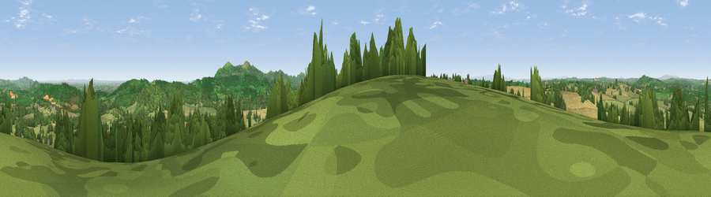

Viewpoint near Longley Green
#5820 in England · top 14% of its area beats it · near Longley Green · path 61 mWhere it is
The exact computed spot (SO 71325 49075). Click the marker for map links.
Public access: the nearest public right of way is about 61 m away — the final stretch may cross private land. Computed from Natural England's CRoW access layer and OpenStreetMap rights of way — not the legal definitive map. Always verify locally.
The view, rendered

A 360° render of this exact spot computed from the terrain model, tree cover and land cover — summer colours, afternoon light, calibrated against photographs of famous viewpoints. Real trees, hedges and buildings will differ in detail.
The panorama
Grey silhouette: terrain skyline in each direction (720 bearings, Earth curvature and refraction included). Dashed green: skyline with trees (+15 m) and buildings (+8 m) as obstacles. Blue strip: how far the ground is visible on each bearing.
Where the view opens
Wedge length = distance to the farthest visible ground on that bearing (vegetation-aware). Rings at 10, 25 and 50 km.
What fills the view
45% grassland · 36% woodland · 18% cropland ·
Angular shares of the visible panorama (visual magnitude), not map area. Landscape diversity 0.47 (0–1 Shannon).
Key numbers
More beautiful places nearby
The staircase of upgrades: each row has a higher view potential than everything closer. Driving times are estimates from straight-line distance, calibrated against real road routing — check an actual route before setting out.
| Place | Direction | Drive | Score |
|---|---|---|---|
| Viewpoint near Storridge | ENE · 4 km | ~9 min | 73.5 |
| High Grove Hill | ESE · 4 km | ~10 min | 74.2 |
| Viewpoint near West Malvern | ESE · 6 km | ~12 min | 81.4 |
| North Hill | ESE · 6 km | ~13 min | 86.8 |
| Worcestershire Beacon | SE · 7 km | ~14 min | 87.1 |
| Viewpoint near West Quantoxhead | SSW · 122 km | ~146 min | 87.9 |
| Viewpoint near West Quantoxhead | SSW · 123 km | ~147 min | 88.7 |
| Holdstone Hill | SW · 149 km | ~172 min | 90.2 |
52.13922, -2.42040 · source: screening · position refined by local search. Computed location — check access rights before visiting.